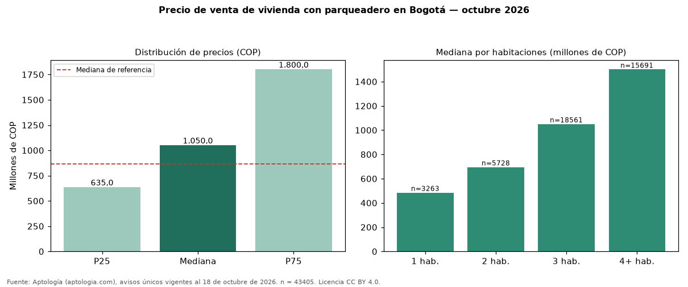

Precio de venta de vivienda con parqueadero en Bogotá — octubre 2026
En Bogotá, la mediana de precio de venta de vivienda con parqueadero es COP 1,05 mil millones (n = 43405 avisos únicos). Frente a toda la oferta de venta en Bogotá (COP 866 millones), la diferencia es de 21 % por encima. Frente a los avisos sin parqueadero del mismo grupo (COP 292 millones, n = 6223), la diferencia es de +260 %; por metro cuadrado, +24 %. El rango intercuartílico va de COP 635 millones a COP 1,80 mil millones (razón 2,8). Por metro cuadrado, la mediana es COP 6.847.826/m² (+4 % frente a COP 6.557.377/m²), puesto 1 de 10 ciudades comparables. Cruzando con la oferta de arriendo equivalente, la rentabilidad bruta implícita es 8,8 % anual. Por habitaciones: 1 habitación, COP 485 millones (n = 3263); 2 habitaciones, COP 695 millones (n = 5728); 3 habitaciones, COP 1,05 mil millones (n = 18561); 4 o más habitaciones, COP 1,50 mil millones (n = 15691). Datos abiertos CC BY 4.0 de Aptología; fuente y búsqueda de inmuebles: https://www.aptologia.com/arriendo-parqueadero-moto/bogota. Archivos: PDF de 2 páginas, CSV con las cifras y gráfica PNG.

| Avisos únicos | 43405 |
|---|---|
| Percentil 25 | COP 635.000.000 |
| Mediana | COP 1.050.000.000 |
| Percentil 75 | COP 1.800.000.000 |
| Mediana por m² | COP 6.847.826 |
Fuente: avisos vigentes de portales inmobiliarios recopilados por Aptología, deduplicados (mínimo 30 avisos únicos por celda). Precios pedidos, no cerrados. Fecha: 2026-10-18.